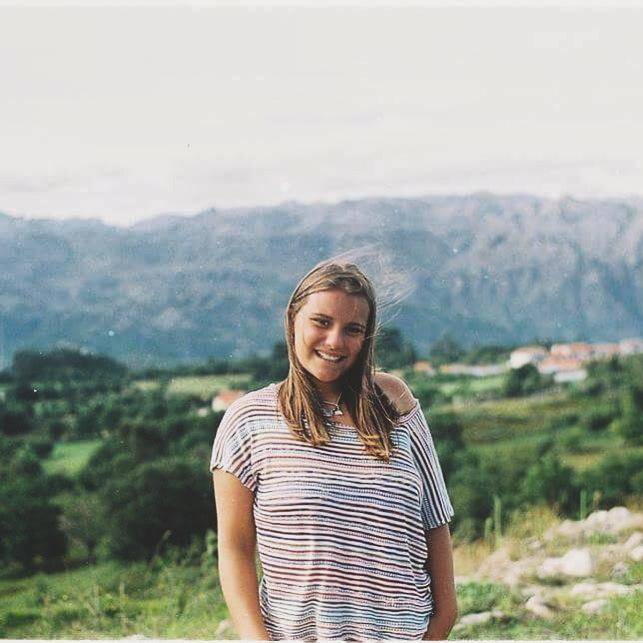

Mariana Vaz Fernandes
26 years

Summary
I'm Mariana, a curious web developer starting my career. As a past biomedical engineering student with a passion for coding I decided to change my professional path.
A lifelong learner and tech enthusiast with creative problem-solving skills.
My diverse work experience across different industries has given me a broader perspective on the world and various job markets. As a web developer, this enables me to approach each project with a client-focused mindset, ensuring their objectives are fully understood and effectively addressed.
Education
- Bachelor of Biomedical Engineering, Bioelectronics - ISEC, Polythechnic Institute of Coimbra (2017 - Present)
- Full-Stack Web Development- Master D, Porto (2023 - Present)
- The Complete 2024 Web Development Bootcamp- Dr.Angela Yu, Udemy (2024 - Present)
Work Experience
- Production and Machine Operator- In2Care , Wagenningen, Netherlands
January-July, 2022
- Responsible for operating and monitoring production equipment, ensuring that the production lines ran smoothly and efficiently.
- Managed machinery, maintained safety standards.
- Handled email inquiries from customers seeking information on where to find our products. My responsibilities included directing customers to the appropriate retailers and ensuring they received the necessary details to make informed purchasing decisions.
- Jewelry Sales Associate-Joiarte, Ovar, Portugal
August 2022 - June 2023
- Assisted customers in selecting jewelry, providing product information, and managing sales transactions.
- Sales, Produce, Inventory Control and Grocery Associate- Mercadona, Ovar, Portugal
July-October, 2023
- Processed customer transactions, handle cash, and provided customer service at the checkout counter.
- Responsible for stocking shelves, organizing products, and ensuring inventory levels are maintained
- Handled the fresh fruit and vegetable section, ensuring produce was displayed properly, rotated, and fresh for customers.
- Tracked stock levels, ensuring products were in stock, and managing inventory through various systems.
- Warehouse Associate- Tiffosi, São João da Madeira, Portugal
November 2023 - February 2024
- Managed the backstock and storage area of the store, ensuring inventory is organized and ready for display
- Responsible for receiving, storing, organizing, and preparing clothing stock for distribution to the retail floor.
- Kitchen Assistant- Corte Steakhouse, Ovar, Portugal
March-July, 2024
- Responsible for preparing and cooking food.
- Responsible for cleaning dishes, utensils, and kitchenware.
- Surf School Manager- Fura Beach Surf Center, Ovar, Portugal
May 2024 - Present
- Setting up surfboards, assisting with safety instructions, providing equipment, and ensuring the overall smooth operation of lessons.
- Guiding surfers to ideal surf spots based on conditions, local knowledge, and experience.
- Managing staff, scheduling lessons, ensuring customer satisfaction and processing payments.
- Handling customer service tasks, booking lessons, managing equipment rentals.
- As an Outdoor Activity Coordinator, I planned and managed surf camps for children, ensuring activities were both fun and educational.
- As a Surf Trip Coordinator, I organized surf trips, from booking accommodations to ensuring that all equipment was available and in good condition. I handled scheduling, transportation, accommodation and creating an itinerary that balanced surfing lessons, beach activities, and downtime.
Skills
Soft Skills
- Excellent verbal and written communication
- Strong team collaboration and conflict resolution skills
- Proven ability to manage time effectively and meet deadlines
- High emotional intelligence with strong empathy and active listening
- Adaptable to learn new skills or tools
Hard Skills
Technical Skills:
- Programming Languages: Knowledge of coding languages like Python, JavaScript, C++, etc.
- Web Development: Proficiency in HTML, CSS, JavaScript,
- Database Management: Knowledge of SQL and tools like MySQL
- Software Development:miliarity with version control tools, as GitHub and development environments like VSCode
Data Analysis:
- Excel: Advanced Excel skills, including using formulas, pivot tables, macros, and data modeling.
Languages:
- Portuguese: Native;
- English: Advanced Knowledge;
- Spanish: Fluent;
Other